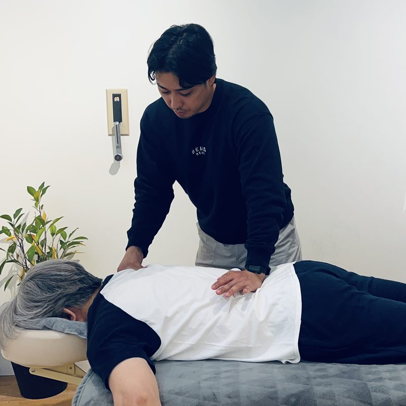
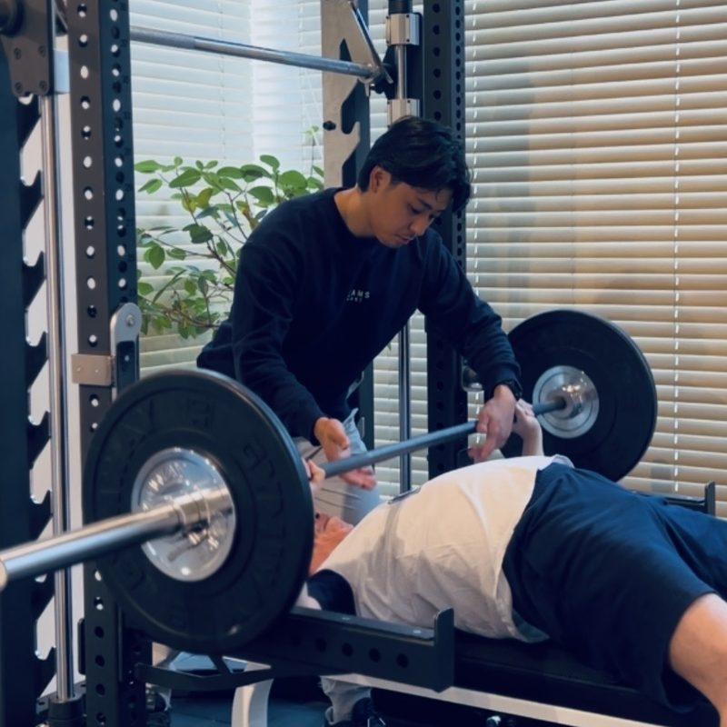
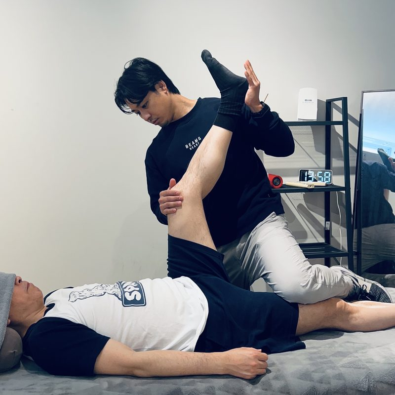
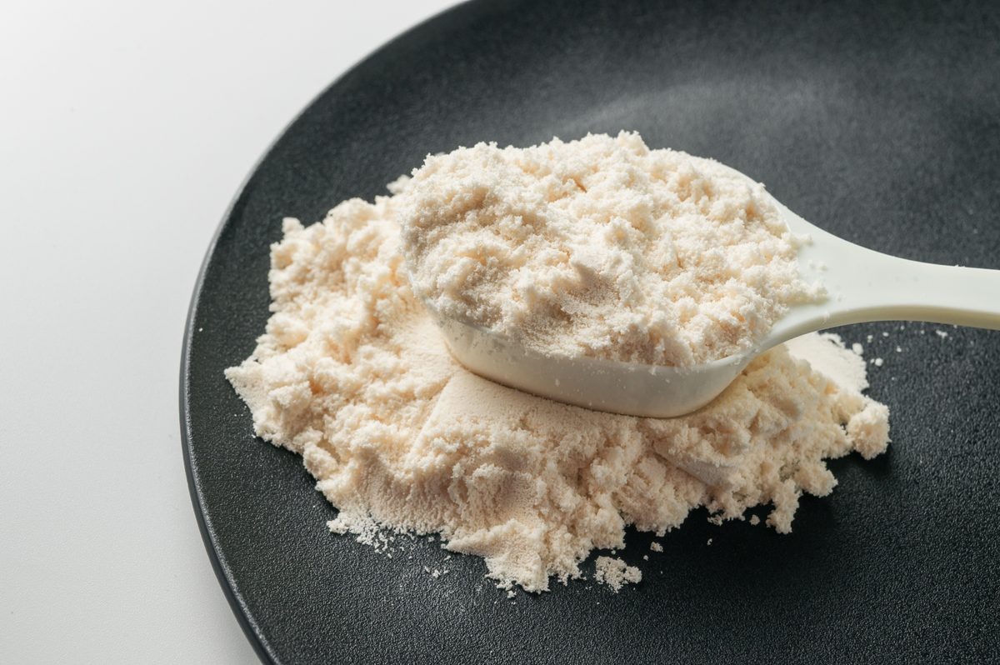

01. ADJUSTMENT
調整その日の不調の根本原因を特定。トレーニング効果を最大化する状態へ導きます。
南青山・紹介制プライベートスタジオ
『KANASA conditioning』
10年後の自分へ、最高の自由を贈る投資を。


しかし、多忙な日々の中で、ジムとメンテナンスを別々にこなす「時間」を捻出するのは、至難の業ではないでしょうか。
南青山の静寂に包まれた、紹介制・完全プライベートスタジオ『KANASA』。ここでは、プロアスリートが実践する「調整・トレーニング・回復」の3ステップを、わずか90分のセッションに凝縮し、貴方専用のプログラムとして統合します。
全米スポーツ医学（NASM）の知見に基づき、身体の「使い方」そのものを最適化する。それは、単なる凝りの解消ではなく、10年、20年先も自分の足でどこへでも行き、好きなものを食べ、人生を謳歌し続けるための「身体の資産化」です。
それは単に筋肉を伸ばすことではなく、脳のイメージを、肉体が一切邪魔をせずに具現化できる能力のこと。
ただ脱力して獲得した可動域に、本質的な価値はありません。かかる負荷を自らの意志でコントロールし、使いこなす。その能動的なプロセスの先にこそ、真の柔軟性が宿ります。
イメージ通りに手が届く。
思い描いた軌道のままスイングできる。
咄嗟の出来事に対応できる。
それこそが"動き"の本質であり、失ってはいけない身体能力です。
本質に近づいた時、今まで感じていた"動き"の不安は消え、
絶大な自信へとつながるでしょう。
3ステップを1セッション（90分）
でご提供いたします。

その日の不調の根本原因を特定。トレーニング効果を最大化する状態へ導きます。

ダイエットやボディメイクだけでなく、姿勢改善やゴルフパフォーマンス向上など、個々の目的に応じた独自のプログラムを実行します。

スポーツ整体、ストレッチによって翌日への疲労を緩和させ、回復を促進させます。

トレーニングはあくまで刺激です。回復に必要不可欠なタンパク質を補給してこそ効果が最大化されます。トレーニング後のプロテイン１杯をご提供致します。


1994年、沖縄生まれ。
日本健康福祉専門学校沖縄 スポーツ科学トレーナー学科を卒業後、
2015年よりパーソナルトレーナーとしてのキャリアをスタートしました。
都内のコンディショニング施設にて、アスリートからビジネスパーソンまで
幅広い方の身体に携わる中で、ひとつの確信が生まれました。
「鍛えることより、正しく使えることの方が、人生は豊かになる」
忙しい日々の中で、身体のメンテナンスを後回しにしてきた方に、
10年・20年先も動ける身体を。
難しいことは一切不要です。
「楽しくて、ギリギリ心が折れない」──
そのラインを一緒に見つけることが、私の仕事だと思っています。
CERTIFICATION
NASM–PES（全米スポーツ医学協会認定 / 動作メカニクス・傷害予防専門）当スタジオは「SOAP」という精密な評価システムを導入し、あなたのパフォーマンスを最適化します。
あなた自身のコンディションを可視化的データ
「感覚」をデータ化し、あなたの疲労やストレスレベル、身体の違和感を精査します。
科学的な測定で状態を分析
体のバイオメカニクス、可動域、筋力バランス、呼吸状態などを数値で測定。
課題と強みを明確化
「なぜ調子が落ちているのか？」を徹底分析し、最適な戦略を導きます。
ビジネスと連動するコンディショニングプラン
目的に応じて、ストレスマネジメント、パフォーマンス向上、疲労回復を最適化。
時間とエネルギーが貴重なエグゼクティブにとって、最も価値のある投資は自身のパフォーマンスです。SOAPのシステムを活用し、あなたの身体と脳を常に最適な状態に調整することで、決断力、集中力、生産性を最大化。
KANASA Conditioning Studioでは、この総合的なセッションにより、身体の外見の変化だけでなく、内側から整った健康的な身体を目指します。
その名に込めたのは、貴方の人生を誰よりも真摯に想う、私たちの覚悟です。
10年、20年先も自分の足で好きな場所へ行き、人生を謳歌してほしい。健康寿命を延ばし、ビジネスもプライベートも全力で楽しむための「伴走者」として。私たちは貴方の身体に、誰よりも真摯に向き合います。
※ おひとり様2着までお預かり可
※表示価格は全て税込です
2026.04.03
2026.04.03
2026.04.03
トレーニングだけでなく、身体の使い方から見直してもらえたことで、長年悩んでいた肩のつまりが改善されました。毎回のセッションが楽しみで仕方ありません。
ゴルフのスコアが劇的に改善されました。体幹の安定感が増し、以前は力んでいたスイングが自然とできるように。身体への投資は最高のリターンだと感じています。
完全紹介制でしっかり向き合ってもらえる環境が、私には合っていました。調整・トレーニング・リカバリーを90分で完結できるのが、多忙なビジネスパーソンには最高の仕組みです。
A個人差はありますが、姿勢や動きの変化は1〜3回で実感されるケースが多く、筋力や体型の変化は8〜12週間が目安です。可動域・筋力・痛みといった評価指標を数値で管理し、変化を可視化しながら進めます。
A一時的な対処ではなく、「身体の使い方（動作パターン）」を根本から再構築する点が異なります。調整・トレーニング・リカバリーを一体化した設計により、パフォーマンスを長期的に高めることを目的としています。
Aリスクをゼロにはできませんが、初回評価で可動域・既往歴を確認し、安全域内で負荷設定を行います。高重量・高強度は段階的に導入するため、無理のないペースで進めることができます。
A問題ありません。初回は評価と基礎動作から開始し、個々のレベルに合わせて段階的に進行します。むしろ運動習慣のない方ほど、初期段階での変化を大きく実感されることが多いです。
Aマンツーマン指導・個別プログラム設計・技術提供（調整・ストレッチ含む）を統合しているためです。単なるトレーニング指導とは提供価値が異なり、1セッションで「診る・動かす・回復させる」すべてを完結させる設計です。
A最短でも8〜12週間の継続で効果の定着が期待できますが、短期でも身体の使い方の改善は可能です。目的（健康維持・パフォーマンス向上・痛みの解消）に応じて期間を設計します。
A週1〜2回が推奨です。頻度は目的（健康維持／パフォーマンス向上）に応じて調整します。まずは月4回のペースから始め、状態と目標に合わせて柔軟に変更可能です。
A完全予約制のためスケジュール調整が可能です。1回あたり90分で調整・トレーニング・リカバリーを完結させる設計のため、限られた時間でも最大の効果を引き出せます。
Aパーソナルトレーニング・整体・ストレッチの統合指導経験を持ち、個別最適化を重視したアプローチを専門としています。詳細はプロフィールをご参照ください。
A強引な勧誘は行いません。初回体験後、ご自身の意思で判断いただく方針です。完全紹介制という性質上、ご縁を大切にした長期的な関係性を重視しています。
お問合せありがとうございます。
内容を確認の上、折り返しご連絡いたします。